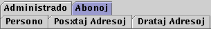

1996-02-29
Pri variablo, dosiero, dosierujo, memoro uzata por peri datumon inter operacioj, kontraste al problemaj, konceptaj objektoj kiuj prezentas grandon el la problemtereno. Ekz-e por interŝanĝi la valorojn de variabloj x kaj y oni bezonas laboran kromvariablon lab:
lab := x; x := y; y := lab;
Kp malneta dosiero.
Angle:
auxiliary, intermediate, scratch, temporary
Ruse:
промежуточный, рабочий, вспомогательный
1999-03-29
Ω Lingvo, kies ordonoj startigas programojn kaj indikas al ili la traktendajn dosierojn kaj ceterajn parametrojn. Riĉa laboradministra lingvo disponigas variablojn, esprimojn kaj stirfrazojn. Ekz-e JCL (laboradministra lingvo de IBM/360 kaj IBM/370), ŝeloj en Unikso.
Angle: job control language, command language
Ruse:
язык управления заданиями
1996-02-29
Ω Kolekto da programoj kaj iliaj datumoj, traktata de la operaciumo kiel unu tuto. Kp procezo, tasko.
Ekz-e, en Baŝo laboro estas aro da procezoj el unu sama proceza grupo, kun iliaj dukto kaj procezidoj.
Angle: job
France: travail, tâche
Germane: Auftrag
Ruse: задание
1996-02-29
Ω La tuto de la funkcioj administrataj de operaciumo, celantaj aranĝi bonordan plenumon de la laboroj komisiitaj al komputilo, atentante la prioritatojn atribuitajn al tiuj laboroj kaj la disponeblajn risurcojn.
Angle: job scheduling
1996-02-29
Komputa sistemo, kutime konektita al komputila reto, konstruita por uzado en iu aplikkampo; kutime laborstacio estas pli povuma ol persona komputilo, precipe koncerne la grafikon, komputivon, plurtaskadon. Ekz-e, multaj sistemoj por komputilizita projektado.
Angle: workstation
France: poste de travail
Ruse: рабочая
станция
1996-02-29
En GUI, parto de ekrano kiu per piktogramoj kaj menuoj bildigas laboran spacon de la uzulo, kaj ebligas al li moviĝi inter fenestroj, taskoj kaj aliaj GUI-objektoj — sen tajpi komandojn en laboradministra lingvo.
Angle: desktop
France: bureau
Ruse: рабочий стол
1997-09-22
Ĵargona vorto por mikroprogramo — kp fer(aĵ)o.
Angle: firmware
1996-02-29
Unu el la literoj grekaj, kies ĉeflitera formo estas uzata por signi vakuon, iam pli speciale: la vakuan vorton kontraste al la vakua aro (signata per trastrekita 0). Pri la etlitera formo vd lambdokalkulo.
Angle: lambda
Ruse: лямбда
1996-02-29
 Formala lingvo por prezenti kaj difini funkciojn, forte influinta la funkciajn programlingvojn, i.a. LISPon. Ĝi aperis komence de 1930aj jaroj en verkoj
de A. Ĉurĉo kiel rimedo por matematika
difino de la koncepto de komputeblo.
Formala lingvo por prezenti kaj difini funkciojn, forte influinta la funkciajn programlingvojn, i.a. LISPon. Ĝi aperis komence de 1930aj jaroj en verkoj
de A. Ĉurĉo kiel rimedo por matematika
difino de la koncepto de komputeblo.
Funkcion oni ofte difinas per esprimo (formulo, termo) T(x), entenanta liberan variablon x. Nu, la tradicia «funkcia skribo» T(x) estas plursenca, ĉar ĝi povas simboli funkcion aŭ ties valoron, la rezulton de ĝia apliko al la argumento x. Por klare indiki, ke temas pri la unua senco, ke la esprimon T oni rigardas funkcio de x, oni uzas lambdo-esprimon (λx)T (en kiu x iĝas ligita variablo). Do, la difino de funkcio per egalaĵo, f(x)=T, ekvivalentas al la difino F=(λx)T.
La esprimon (λx)T oni rajtas rigardi operatoro ĵetanta esprimon T en funkcion. En matematiko tia operatoro nomiĝas lambdo-abstraktaĵo; en programlingvoj ĝi esprimeblas per funkcideklaro aŭ procedurdeklaro, en ALGOL, ankaŭ per speciala konverto (procedurigo, angle proceduring, de ALGOL-68; la pasigo per algoritmo de ALGOL-60).
Angle: lambda calculus
Ruse:
лямбда-исчисление
1996-02-29
Igi komputilon plenumi programon, komenci procezon.
Angle: launch, trigger, run
Pole: uruchomić
Ruse: запустить
1996-02-29
En dialogujo imitanta sliparon, elstara peco de slipbildo servanta por elekti (aktivigi) la koncernan «slipon».

Angle: tab
France: onglet, languette
Ruse: ушко, язычок
1998-12-29
Tia trairo de grafeo, ke unue estas traktataj la verticoj situantaj pli proksime al la elira. Kontraste al la profundiĝema trairo, en kiu la vizititaj sed ankoraŭ ne eluzitaj verticoj estas stakigataj, en la larĝiĝema trairo tiajn verticojn oni registras en rektvica memoro.

Angle: breadth-first search
Ruse: поиск
вширь
1996-02-29
Neperkuta printilo uzanta laserradion por fari bildon kaj elektrostatike ĝin surpaperigi. Laseraj printiloj estas malbruaj kaj pli rapidaj ol la elektromeĥanikaj. Ili havas pli altan distingivon — almenaŭ 300 dpi (ĉ. 12 rastrumerojn en 1 mm). Laseraj printiloj printas grafike kaj estas uzataj en la surtabla tipografio.
Angle:
laser printer
Ruse: лазерный принтер
1996-02-29
 Makroopakaĵo, kiu
estas kvazaŭ etendaĵo de Teĥo (TeX), programaro
por komputilizita kompostado. Kompare kun Teĥo, Lateĥo disponigas
oportunajn rimedojn por referencado al figuroj, tabeloj, strukturaj
subdividoj (ĉapitroj, sekcioj ktp) kaj por komposta grafiko per la signoj de la tipara familio de Teĥo.
Makroopakaĵo, kiu
estas kvazaŭ etendaĵo de Teĥo (TeX), programaro
por komputilizita kompostado. Kompare kun Teĥo, Lateĥo disponigas
oportunajn rimedojn por referencado al figuroj, tabeloj, strukturaj
subdividoj (ĉapitroj, sekcioj ktp) kaj por komposta grafiko per la signoj de la tipara familio de Teĥo.
Mia esperantigo de Lateĥo (enigo en la Latina-3a aŭ en ^cirka^u-skribo, vortodividaj ŝablonoj por Esperanto): http://www.esperanto.mv.ru/Download/TeX/eo.tar.gz.
Angle: LaTeX
1996-02-29
En ISO 8859, la «Latina Alfabeto n-ro 1», unu el la sortimento de 8-bitaj ISO-kodoj. Ĝi estas etendo de Askio, destinita por priservi la lingvojn «Nord-Eŭropajn», i.a. anglan, danan, ejran, Feroan, francan, germanan, hispanan, Islandan, italan, norvegan, portugalan, suoman, svedan; aliflanke, ĝi formas la unuan kodpaĝon de Unikodo.
Angle: Latin Alphabet No 1
France: alphabet latin n° 1
1996-02-29
En ISO 8859, la «Latina Alfabeto n-ro 2», unu el la sortimento de 8-bitaj ISO-kodoj, etendo de Askio, destinita por priservi la latinskribajn lingvojn, i.a. ĉeĥan, hungaran, kroatan, polan, rumanan, slovakan k.a.
Angle: Latin Alphabet No 2
France: alphabet latin n° 2
1997-06-10
En ISO-8859, la «Latina Alfabeto n-ro 3», unu el la sortimento de la 8-bitaj ISO-kodoj, entenanta ĉiujn literojn de Esperanto. Ĝi estas etendo de Askio, destinita por priservi la lingvojn «Sud-Eŭropajn», i.a. afrikansan, anglan, Esperanton, francan, galegan, germanan, italan, Maltan kaj turkan. Tamen nur por la Malta kaj Esperanto ne ekzistas aliaj taŭgaj signaroj en la serio ISO-8859; ekz-e la turkoj preferas ISO-8859-9 (la Latina-5).
Noto. Do, la plena nomo de la normo estas «La Tria Latina Alfabeto» (aŭ signaro); la neformalan mallongigon oni povus voĉlegi «Latina tri(a)».
Angle: Latin-3, Latin Alphabet No 3
France: alphabet latin n° 3
1996-11-03
Orda aro en kiu ajnaj du elementoj havas kaj supran, kaj suban limojn [Rei87]. Ekz-e Bulea algebro.
Angle: lattice
Ruse: решётка
1996-02-29
Operacio super bitĉenoj, malkomponebla en pli simplajn operaciojn, kalkulantajn ĉiun n-an biton de la rezulto per samnoma operacio super la n-aj bitpozicioj; ekz-e la unuloka laŭbita operacio:
!10011010 == 01100101 /∗ nego, C ∗/
kaj jen dulokaj:
| kajo | aŭo | disaŭo |
|---|---|---|
| 10011011 | 10011011 | 10011010 |
| 00111101 | 00111101 | 00111101 |
| 00011001 | 10111111 | 10100111 |
Laŭbitaj operacioj disponeblas en C, Ada (vd la uzon de laŭbitaj operacioj super karakterizaj vektoroj por realigi aroperaciojn, Genera programpeco en Ada). Kp sorbema operacio.
Noto. Oni povus heziti pri la prefikso: ĉu preferindas pobita, disbita? Ni preferis laŭbitan, ĉar ĝi estas tute sekura (ekz-e, po- estus dubinda, ja laŭ PIV1 ĝi aplikeblas nur al numeraloj), rekte kopias la anglan -wise, kaj havas paralelojn en laŭvice, laŭvorte, laŭmezure.
Angle:
bitwise operation
Ruse: поразрядная операция
1996-02-29
Ĉe la aritmetikado en b-uma nombrosistemo super la entjeroj ne pli ol l ciferojn longaj, la laŭcifera komplemento de nombro n estas tia entjero ñ, ke n+ñ=bl−1. Alivorte, n+ñ havas en ĉiuj ciferpozicioj la ciferon b−1, do la ciferoj de ñ kalkuleblas sendepende unuj je la aliaj (kaj eventuale, paralele). Vd komplemento ĝis unu, komplemento ĝis naŭ; kp ĝisbaza komplemento, komplementa prezento.
Angle: radix-minus-one complement
Ruse:
поразрядное дополнение
1996-02-29
Programoj projektitaj kaj konstruitaj laŭ speciala mendo por specialaj bezonoj.
Angle: custom software
France: logiciel sur mésure, logiciel à la demande
Germane: Kundenspezifische Software
Ruse:
заказное программное обеспечение
1999-02-20
∏ En rikordotipo de Paskalo, la parto de kamplisto priskribanta la okazetikedon kaj la kampojn, per kiuj diferencas la alternativaj varioj (okazoj).
Angle: variant part
Ruse: сменная
часть, вариантная часть
2005-07-10
Maniero skribi aŭ legi datumon laŭ certa disciplino (ekz-e laŭ la ordo de la registrado, vd rektvica memoro). Kp atingomaniero, senvica atingo.
Angle: serial
access, sequential access
Ruse: последовательный
доступ
1996-02-29
Kopii aŭ movi datumon el malpli alta nivelo de la memorhierarkio al pli alta: el ekstera memoro en la ĉefmemoron, el la ĉefmemoro en procesoran reĝistron. Kp ŝargi; skribi.
Noto. Do, fake la verbo «legi» havas, kompare kun la komunlingva verbo, kroman komplementon:
legi ion el ie en ion.
Angle: read,
load
Ruse: читать, считывать
1996-02-29
(2) leg*i —
Angle: play; read
Ruse: проиграть,
воспроизвести
1998-01-02
Angle: reader
France: lecteur
Pole: czytnik
Ruse: устройство чтения;
программа чтения, читалка, просмотрщик
1996-11-22
En dialoga tekstotraktilo (redaktilo, foliumilo), rimedo ebliganta memorfiksi la kurantan pozicion por poste tien reven(ad)i.
Noto. La termino aludas legosignon en ordinara presita libro: «rubando, strio aŭ lateto, uzata por memorigi, kie oni haltis en la legado de libro» [PIV1]. Evidente, legosigno uzeblas ne nur dum legado, sed ankaŭ dum redaktado.
Angle: bookmark
France: signet
Germane: Lesezeichen
Ruse: закладка
1996-02-29
 En distribua garnituro de komputa
produkto, nelonga teksta dosiero metita en la
radikan dosierujon kaj entenanta resuman
priskribon de la produkto. Plej ofte ĝia nomo
estas legu.min aŭ (angle) read.me ktp.
En distribua garnituro de komputa
produkto, nelonga teksta dosiero metita en la
radikan dosierujon kaj entenanta resuman
priskribon de la produkto. Plej ofte ĝia nomo
estas legu.min aŭ (angle) read.me ktp.
Noto. La vorto estas malofta ekzemplo de kunmetaĵo retenanta finaĵojn (kp enen-klavo, posteulo, vivuo kaj speciale, neforgesumino).
Angle: README file
France: ALIRE, LISEZMOI
Germane: LIESMICH
1996-02-29
En tradukilo, la simboltraktilo aŭ modulo destinita por fari la leksikan analizon.
Angle: lexical
analyser, scanner
Ruse: лексический
анализатор
1996-02-29
Simboltraktado en tradukilo, celanta rekoni (identigi) en tradukata programo la simbolojn, precipe la ŝlosilvortojn, nomojn, literalojn kaj operacisimbolojn. Vd leksika analizilo.
Angle: lexical
analysis, scan
Ruse: лексический анализ
1996-02-29
Ĉia algoritmo por aranĝi la datumanojn laŭ la leksikografia ordo.
Angle: lexicographic sort
Ruse:
лексикографическое упорядочение
1996-02-29
Estu datumtipo a kun rigora ordo «<»; sekvenco
x: TABELO [1..m] EL a
antaŭas sekvencon
y: TABELO [1..n] EL a
SSE veras ajna el la tri kondiĉoj:
Rim. Tamen vd duliteraĵo.
Angle: lexicographic order
France: ordre alphabétique
Pole: porządek słownikowy
Ruse:
лексикографический порядок
1996-02-29
Rimedo, ofte en formo de dialoga programo, por lerni pri programa produkto; ofte parto de ties distribua garnituro.
Angle: tutorial
France: guide d'initiation
Ruse: учебник,
обучающая программа
1999-09-10